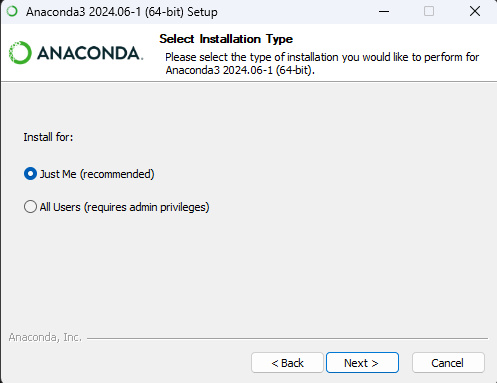

1.2 Install Anaconda
First, Download the Anaconda Installer. Remember to choose the right installer for your computer’s operating system (i.e., MacOS/Linux, Windows).
Run the installer and follow the steps.
For Windows:
Run the
.exeinstaller.Click
Next >. When asked to select the type of the installation, select theJust Meoption.
Installing for current user onlyYou don’t need to install for all users most of the time. This option requires admin privileges which you might not have on your MSK laptop.
Choose installation location. You can keep the default location. E.g.,
C:\Users\<user_name>\AppData\Local\anaconda3.Now, going to the advanced installation options. Do not add anaconda3 to my PATH environment variable in Windows, as it might cause potential conflicts with your other Python installations.
 Do not add Anaconda to PATH
Do not add Anaconda to PATHIt is recommended that you do not add anaconda3 to system’s PATH environment variable, as it might lead to conflict with your other Python installations.
Instead, later run
conda initin Anaconda Prompt to configure the terminal shell (bash, zsh, and cmd) to recognizecondaall the time.
For MacOS:
Run the
.pkginstaller.When asked for the installation location, keep the default location:
/home/<your_user>/miniconda3.When asked if you want to initialize conda, answer YES (remember this because the default answer is set to no). This enables access to conda from the standard terminal (bash, cmd) every time you open it.
Finish the installation.
Finally, you can check that conda is properly installed.
For Windows
- Open the Start Menu of Windows and look for Anaconda Prompt. Open it.
- Type
conda infointo the Anaconda Prompt terminal. You should see details about your current conda installation. This means that conda is properly installed and initialized.
For MacOS:
- Open a new terminal.
- You should see
(base)in the beginning of the prompt. This means that conda is properly installed and the base environment is activated. - Similarly, write
conda infoin the terminal. You should see the info about the current conda installation returned.
1.3 Virtual Environments
What is a virtual environment?
Environments are isolated, independent installations of a programming language and groups of packages that don’t interfere with each other.
For example, you may have a Python version 3.8 installed on your computer as the System Python. Meanwhile, you can install as many virtual environments as you want with the same or different Python versions and set of packages.
You can switch between environments for different projects, create environment files and share them with others.
Why virtual environments?
You may find the flexibility of environments useful in many cases.
Avoid Conflicts. When you need libraries that are not compatibles with your system settings, such as an older Python version or conflicting dependencies. Creating a virtual environment can resolve the conflicts and changing it won’t affect your other environments.
Sharing Environment Setting. You can also share your environment and the list of dependencies with someone with a copy of the
environment.yamlfile.Easy Management. When your work is temporary or that you simply want to experiment things without having to worry about things breaking, you can work within a virtual environemnt and later delete it when needed.
1.3.1 Creating a Virtual Environment (with GUI)
One option to create an environment in through the Anaconda Navigator graphical user interface (GUI). This approach is straightforward and does not require command line skills.
Open the Anaconda Navigator application.

The Home page shows tabs for software available to be installed or launched in the Navigator (E.g., RStudio, VS Code, JupyterLab, and Jupyter Notebook). The first dropdown menu at the top allows filtering applications shown below.
From the second dropdown menu, you may switch to other conda environments that you have created. Then you may launch applications from within the environment you selected.
Create the first virtual environment.
Select the Environments tab on the left. Click Create as shown below:

Customizing environment name and Python version.
In the environment Name field, type a descriptive name for your environment. Then choose the Python version you want (default is the latest version). For example, create an environment with Python 3.10 and name it
python310.Click Create. Navigator creates the new environment and activates it.
Now you have two environments: the default environment
base (root)and the one you just created.Installing packages.

Stay in the virtual environment you just created. Open the dropdown filter and select Not Installed. Type the name of the package you want to install into the upper right search box. E.g.,
seaborn.Select the checkbox and click Apply. The selected package will be installed.
Now you can see the package name listed under the Installed category.
Installing packages available outside of the default channel.
By default, the Navigator shows packages under the
defaultschannel. There are many more channels available in Anaconda.org and Anaconda.cloud with a wider range of packages to install.For example, if we want to install a package from the
conda-forgechannel, we will first need to add it to Navigator.Click Channels

Click Add….
Type
conda-forgein the text box and press Enter.Click Update channels.
Now your package search will also include packages on the
conda-forgechannel.Removing an environment.
On the Environments page, select the environment you want to remove. Click Remove.

The entire environment, including the packages installed to it, will be deleted.